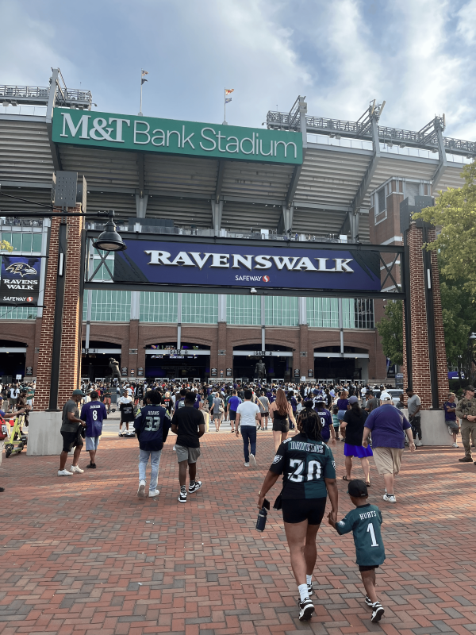
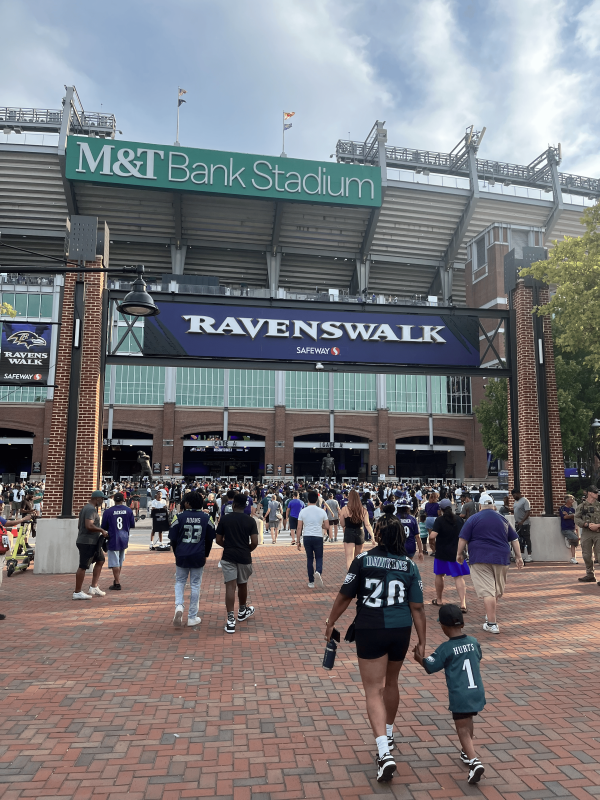

Lab 08 Multi Web Page
3rd Image
This image will be the final one and is formatted as a png.
About
This picture was taken by me on August 12, 2023 at a preseason game.
Source
- Original Photo by Eduardo Cardenas
This image will be the final one and is formatted as a png.
This picture was taken by me on August 12, 2023 at a preseason game.